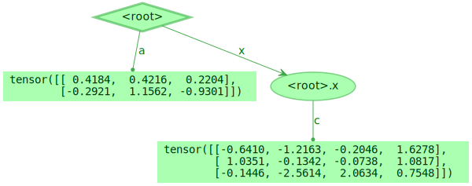
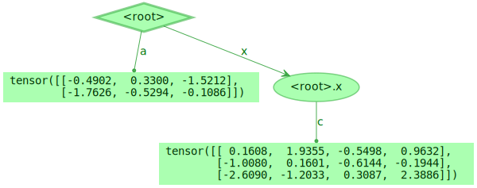

Comparison Between TreeValue and Tianshou Batch¶
In this section, we will take a look at the feature and performance of the Tianshou Batch library, which is developed by Tsinghua Machine Learning Group.
Before starting the comparison, let us define some thing.
[1]:
import torch
_TREE_DATA_1 = {'a': 1, 'b': 2, 'x': {'c': 3, 'd': 4}}
_TREE_DATA_2 = {
'a': torch.randn(2, 3),
'x': {
'c': torch.randn(3, 4)
},
}
_TREE_DATA_3 = {
'obs': torch.randn(4, 84, 84),
'action': torch.randint(0, 6, size=(1,)),
'reward': torch.rand(1),
}
/opt/hostedtoolcache/Python/3.8.16/x64/lib/python3.8/site-packages/tqdm/auto.py:21: TqdmWarning: IProgress not found. Please update jupyter and ipywidgets. See https://ipywidgets.readthedocs.io/en/stable/user_install.html
from .autonotebook import tqdm as notebook_tqdm
Read and Write Operation¶
Reading and writing are the two most common operations in the tree data structure based on the data model (TreeValue and Tianshou Batch both belong to this type), so this section will compare the reading and writing performance of these two libraries.
TreeValue’s Get and Set¶
[2]:
from treevalue import FastTreeValue
t = FastTreeValue(_TREE_DATA_2)
[3]:
t
[3]:

[4]:
t.a
[4]:
tensor([[-0.3595, -0.9735, 0.4876],
[-1.0218, 0.9838, -0.8920]])
[5]:
%timeit t.a
73.2 ns ± 1.46 ns per loop (mean ± std. dev. of 7 runs, 10,000,000 loops each)
[6]:
new_value = torch.randn(2, 3)
t.a = new_value
t
[6]:

[7]:
%timeit t.a = new_value
86.1 ns ± 2.4 ns per loop (mean ± std. dev. of 7 runs, 10,000,000 loops each)
Tianshou Batch’s Get and Set¶
[8]:
from tianshou.data import Batch
b = Batch(**_TREE_DATA_2)
[9]:
b
[9]:
Batch(
a: tensor([[-0.3595, -0.9735, 0.4876],
[-1.0218, 0.9838, -0.8920]]),
x: Batch(
c: tensor([[ 0.8509, 0.1377, 0.1653, 0.4944],
[ 0.4517, 0.7283, 1.1006, 0.1095],
[ 1.2635, 0.2936, -0.2271, -0.0406]]),
),
)
[10]:
b.a
[10]:
tensor([[-0.3595, -0.9735, 0.4876],
[-1.0218, 0.9838, -0.8920]])
[11]:
%timeit b.a
61.9 ns ± 1.49 ns per loop (mean ± std. dev. of 7 runs, 10,000,000 loops each)
[12]:
new_value = torch.randn(2, 3)
b.a = new_value
b
[12]:
Batch(
a: tensor([[ 0.6583, 1.2563, -0.2269],
[ 0.3504, -1.6869, 1.4094]]),
x: Batch(
c: tensor([[ 0.8509, 0.1377, 0.1653, 0.4944],
[ 0.4517, 0.7283, 1.1006, 0.1095],
[ 1.2635, 0.2936, -0.2271, -0.0406]]),
),
)
[13]:
%timeit b.a = new_value
539 ns ± 11.1 ns per loop (mean ± std. dev. of 7 runs, 1,000,000 loops each)
Initialization¶
TreeValue’s Initialization¶
[14]:
%timeit FastTreeValue(_TREE_DATA_1)
866 ns ± 31.2 ns per loop (mean ± std. dev. of 7 runs, 1,000,000 loops each)
Tianshou Batch’s Initialization¶
[15]:
%timeit Batch(**_TREE_DATA_1)
11.4 µs ± 674 ns per loop (mean ± std. dev. of 7 runs, 100,000 loops each)
Deep Copy Operation¶
[16]:
import copy
Deep Copy of TreeValue¶
[17]:
t3 = FastTreeValue(_TREE_DATA_3)
%timeit copy.deepcopy(t3)
154 µs ± 3.24 µs per loop (mean ± std. dev. of 7 runs, 10,000 loops each)
Deep Copy of Tianshou Batch¶
[18]:
b3 = Batch(**_TREE_DATA_3)
%timeit copy.deepcopy(b3)
150 µs ± 1.18 µs per loop (mean ± std. dev. of 7 runs, 10,000 loops each)
Stack, Concat and Split Operation¶
Performance of TreeValue¶
[19]:
trees = [FastTreeValue(_TREE_DATA_2) for _ in range(8)]
[20]:
t_stack = FastTreeValue.func(subside=True)(torch.stack)
t_stack(trees)
[20]:

[21]:
%timeit t_stack(trees)
33.2 µs ± 921 ns per loop (mean ± std. dev. of 7 runs, 10,000 loops each)
[22]:
t_cat = FastTreeValue.func(subside=True)(torch.cat)
t_cat(trees)
[22]:

[23]:
%timeit t_cat(trees)
32.1 µs ± 1.01 µs per loop (mean ± std. dev. of 7 runs, 10,000 loops each)
[24]:
t_split = FastTreeValue.func(rise=True)(torch.split)
tree = FastTreeValue({
'obs': torch.randn(8, 4, 84, 84),
'action': torch.randint(0, 6, size=(8, 1,)),
'reward': torch.rand(8, 1),
})
%timeit t_split(tree, 1)
59.5 µs ± 2.07 µs per loop (mean ± std. dev. of 7 runs, 10,000 loops each)
Performance of Tianshou Batch¶
[25]:
batches = [Batch(**_TREE_DATA_2) for _ in range(8)]
Batch.stack(batches)
[25]:
Batch(
x: Batch(
c: tensor([[[ 0.8509, 0.1377, 0.1653, 0.4944],
[ 0.4517, 0.7283, 1.1006, 0.1095],
[ 1.2635, 0.2936, -0.2271, -0.0406]],
[[ 0.8509, 0.1377, 0.1653, 0.4944],
[ 0.4517, 0.7283, 1.1006, 0.1095],
[ 1.2635, 0.2936, -0.2271, -0.0406]],
[[ 0.8509, 0.1377, 0.1653, 0.4944],
[ 0.4517, 0.7283, 1.1006, 0.1095],
[ 1.2635, 0.2936, -0.2271, -0.0406]],
[[ 0.8509, 0.1377, 0.1653, 0.4944],
[ 0.4517, 0.7283, 1.1006, 0.1095],
[ 1.2635, 0.2936, -0.2271, -0.0406]],
[[ 0.8509, 0.1377, 0.1653, 0.4944],
[ 0.4517, 0.7283, 1.1006, 0.1095],
[ 1.2635, 0.2936, -0.2271, -0.0406]],
[[ 0.8509, 0.1377, 0.1653, 0.4944],
[ 0.4517, 0.7283, 1.1006, 0.1095],
[ 1.2635, 0.2936, -0.2271, -0.0406]],
[[ 0.8509, 0.1377, 0.1653, 0.4944],
[ 0.4517, 0.7283, 1.1006, 0.1095],
[ 1.2635, 0.2936, -0.2271, -0.0406]],
[[ 0.8509, 0.1377, 0.1653, 0.4944],
[ 0.4517, 0.7283, 1.1006, 0.1095],
[ 1.2635, 0.2936, -0.2271, -0.0406]]]),
),
a: tensor([[[-0.3595, -0.9735, 0.4876],
[-1.0218, 0.9838, -0.8920]],
[[-0.3595, -0.9735, 0.4876],
[-1.0218, 0.9838, -0.8920]],
[[-0.3595, -0.9735, 0.4876],
[-1.0218, 0.9838, -0.8920]],
[[-0.3595, -0.9735, 0.4876],
[-1.0218, 0.9838, -0.8920]],
[[-0.3595, -0.9735, 0.4876],
[-1.0218, 0.9838, -0.8920]],
[[-0.3595, -0.9735, 0.4876],
[-1.0218, 0.9838, -0.8920]],
[[-0.3595, -0.9735, 0.4876],
[-1.0218, 0.9838, -0.8920]],
[[-0.3595, -0.9735, 0.4876],
[-1.0218, 0.9838, -0.8920]]]),
)
[26]:
%timeit Batch.stack(batches)
81.9 µs ± 2.32 µs per loop (mean ± std. dev. of 7 runs, 10,000 loops each)
[27]:
Batch.cat(batches)
[27]:
Batch(
x: Batch(
c: tensor([[ 0.8509, 0.1377, 0.1653, 0.4944],
[ 0.4517, 0.7283, 1.1006, 0.1095],
[ 1.2635, 0.2936, -0.2271, -0.0406],
[ 0.8509, 0.1377, 0.1653, 0.4944],
[ 0.4517, 0.7283, 1.1006, 0.1095],
[ 1.2635, 0.2936, -0.2271, -0.0406],
[ 0.8509, 0.1377, 0.1653, 0.4944],
[ 0.4517, 0.7283, 1.1006, 0.1095],
[ 1.2635, 0.2936, -0.2271, -0.0406],
[ 0.8509, 0.1377, 0.1653, 0.4944],
[ 0.4517, 0.7283, 1.1006, 0.1095],
[ 1.2635, 0.2936, -0.2271, -0.0406],
[ 0.8509, 0.1377, 0.1653, 0.4944],
[ 0.4517, 0.7283, 1.1006, 0.1095],
[ 1.2635, 0.2936, -0.2271, -0.0406],
[ 0.8509, 0.1377, 0.1653, 0.4944],
[ 0.4517, 0.7283, 1.1006, 0.1095],
[ 1.2635, 0.2936, -0.2271, -0.0406],
[ 0.8509, 0.1377, 0.1653, 0.4944],
[ 0.4517, 0.7283, 1.1006, 0.1095],
[ 1.2635, 0.2936, -0.2271, -0.0406],
[ 0.8509, 0.1377, 0.1653, 0.4944],
[ 0.4517, 0.7283, 1.1006, 0.1095],
[ 1.2635, 0.2936, -0.2271, -0.0406]]),
),
a: tensor([[-0.3595, -0.9735, 0.4876],
[-1.0218, 0.9838, -0.8920],
[-0.3595, -0.9735, 0.4876],
[-1.0218, 0.9838, -0.8920],
[-0.3595, -0.9735, 0.4876],
[-1.0218, 0.9838, -0.8920],
[-0.3595, -0.9735, 0.4876],
[-1.0218, 0.9838, -0.8920],
[-0.3595, -0.9735, 0.4876],
[-1.0218, 0.9838, -0.8920],
[-0.3595, -0.9735, 0.4876],
[-1.0218, 0.9838, -0.8920],
[-0.3595, -0.9735, 0.4876],
[-1.0218, 0.9838, -0.8920],
[-0.3595, -0.9735, 0.4876],
[-1.0218, 0.9838, -0.8920]]),
)
[28]:
%timeit Batch.cat(batches)
158 µs ± 981 ns per loop (mean ± std. dev. of 7 runs, 10,000 loops each)
[29]:
batch = Batch({
'obs': torch.randn(8, 4, 84, 84),
'action': torch.randint(0, 6, size=(8, 1,)),
'reward': torch.rand(8, 1)}
)
%timeit list(Batch.split(batch, 1, shuffle=False, merge_last=True))
368 µs ± 3.52 µs per loop (mean ± std. dev. of 7 runs, 1,000 loops each)
[ ]: